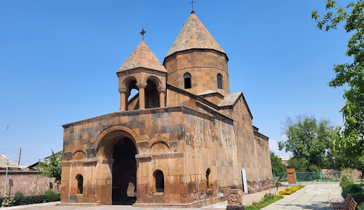
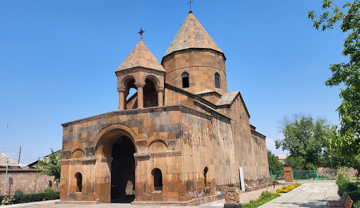
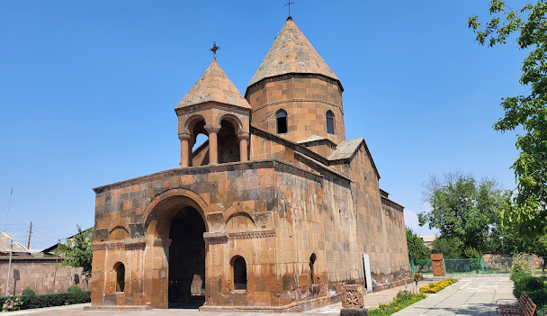

Արմավիր
։ Մարգարա գյուղի մոտ Արաքս գետի վրա կառուցված ավտոճանապարհային կամուրջը Հայաստանը միացնում է Թուրքիային։ Մարզի տարածքը եղել է պատմական Հայաստանի Այրարատ նահանգի մի մասը։ Կլիման խիստ ցամաքային է։ Մթնոլորտային տեղումների քանակը չի գերազանցում 300 մմ։ Ամառը շոգ է, տևական (4-5 ամիս)։ Հաճախ ջերմաստիճանը բարձրանում է մինչև 40-42 °C։ Բնորոշ են լեռնահովտային քամիները։ Ձմեռը ցուրտ է, անամպ, անհողմ։ Գարունը կարճատև է։ Առանձնապես հաճելի է արևոտ, անհողմ, տևական աշունը, երբ հասունանում են այգիների ու դաշտերի բարիքները։ Հարթավայրային մասի բնական կիսաանապատային լանդշաֆտները խիստ փոփոխված են։ Ներկայումս տիրապետում են մարդածին լանդշաֆտները։ Բնական ծածկույթը, որը հումուսով աղքատ գորշահողեր են, հազարամյակների ընթացքում ոռոգովի երկրագործրության պայմաններում վերածվել է կուլտուր-ոռոգելի հողերի։ Հարթության ցածրադիր մասերում գոյացել են ճահճուտներ։
Տնտեսություն
Մարդկային ներուժի զարգացման ինդեքս Ստորև ներկայացված է Մարդկային ներուժի զարգացման ինդեքսի փոփոխությունը ըստ տարիների[2]։ Այն իրենից ներկայացնում է մարզի կրթական մակարդակի, կյանքի սպասվող տևողության և մեկ անձին ընկնող տարեկանի եկամուտների համախառն ցուցանիշ։ Մարզը հարուստ չէ օգտակար հանածոներով։ Բազմաթիվ են պատմական և ճարտարապետական հուշարձանները։ Հայտնաբերվել են Մեծամորի բրոնզեդարյան մետաղաձուլարանը, Վանի թագավորության քաղաք Արգիշտիխինիլիի ավերակները։ Պատմաճարտարապետական մեծագույն արժեք են ներկայացնում Էջմիածնի վանական կառույցները, Զվարթնոց տաճարի ավերակները, Վաղարշապատում Սուրբ Հռիփսիմե, Սուրբ Գայանե, Շողակաթ եկեղեցիները, ինչպես նաև Սարդարապատի հուշահամալիրը։ Արմավիրի մարզը բնակչության թվով և խտությամբ Հայաստանում գրավում է առաջին տեղը։ Մարզին բնորոշ է այն, որ չնայած ռելիեֆային պայմանների միատարրությանը՝ բնակչության տեղաբաշխումը հավասարաչափ չէ։ Նրա ամենամեծ կուտակումը մարզի արևելյան հատվածում է։ Դեպի արևմուտք շարժվելիս այն կտրուկ նվազում է։ Արմավիրի մարզի խոշոր գյուղերն են՝ Նալբանդյան, Արշալույս, Փարաքար, Սարդարապատ։ Արմավիրի մարզն ունի երեք քաղաք՝ Արմավիրը (29,319 բնակիչ), Վաղարշապատը (46,540 բնակիչ) և Մեծամորը (9,191 բնակիչ)։

 
